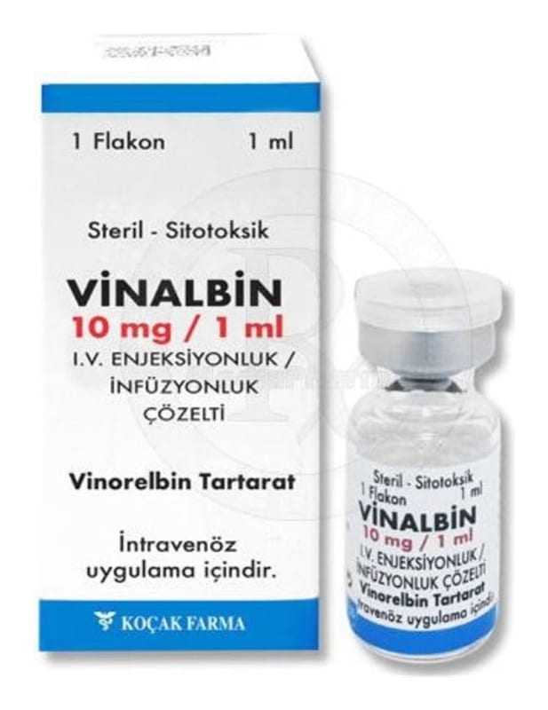

Vinalbin 10 mg/1 ml I.V. Enjeksiyonluk/İnfüzyonluk Çözelti, 1 Adet

Ne için kullanılır
KT · Bölüm 1VİNALBİN yalnızca damar içine uygulanan berrak, renksiz-açık sarı renkli bir çözeltidir. 1 flakonluk kutularda sunulmaktadır.
VİNALBİN kanser tedavisinde kullanılan vinka alkaloitleri adı verilen bir ilaç ailesine aittir. Etkin madde olarak vinorelbin tartarat içerir.
VİNALBİN 18 yaş üzerindeki hastalarda bazı akciğer kanserleri ve meme kanserlerinin tedavisinde kullanılır.